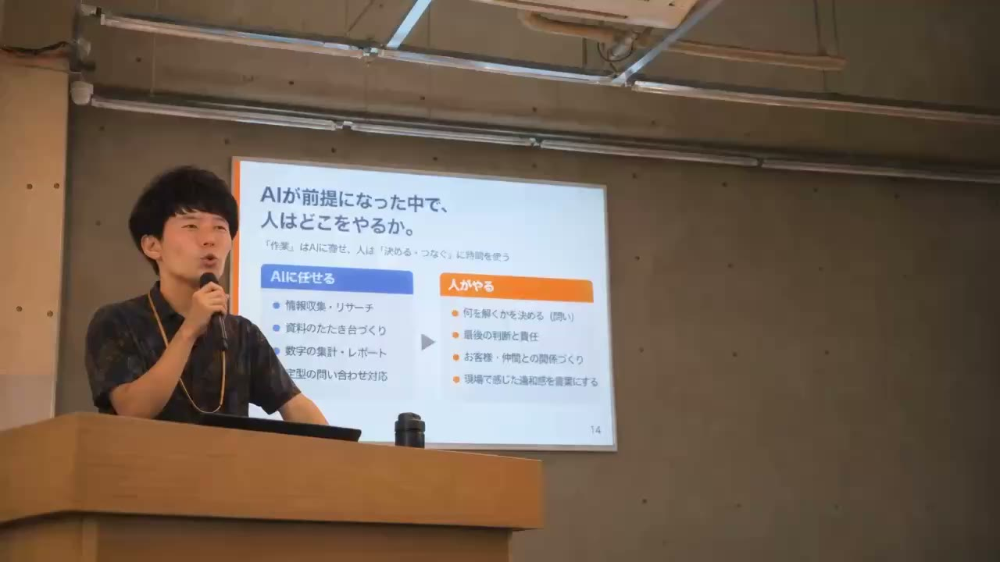
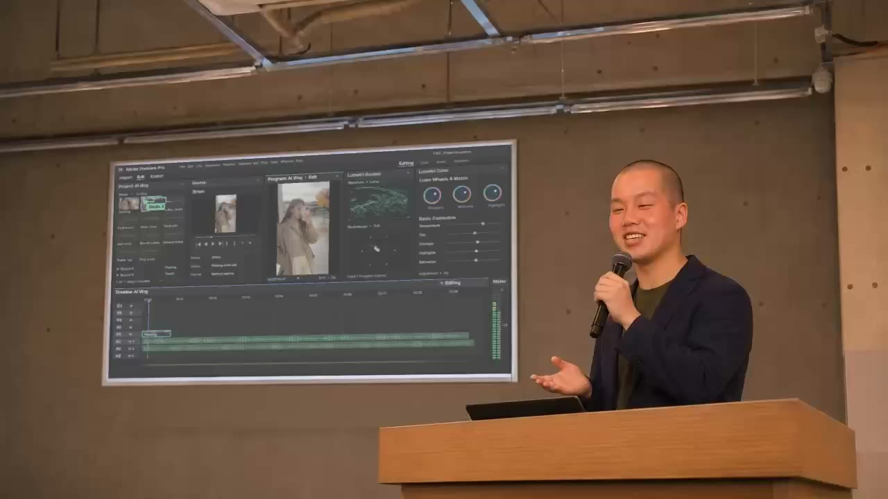
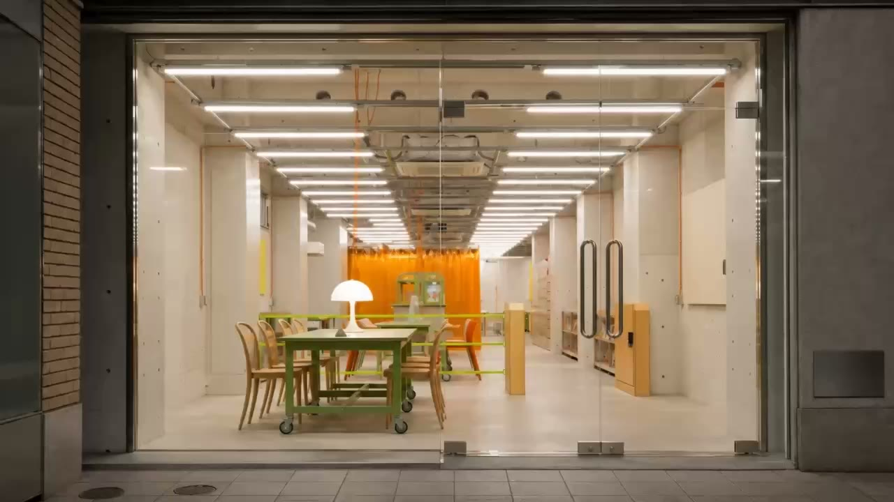

LECTURER 01
杉永 竜之助
あどえる ／ 株式会社Foxx
講義
「AI × 今後のWEB広告業界について」
- AI × 今後の
WEB広告業界について - AI導入の
失敗パターンと解決策 - 社内FDE（AIを活用した、
システム開発者）と ローカルLLMの展望
01 LECTURERS
2つの講義を、2人の講師がそれぞれの立場から話します。

LECTURER 01
あどえる ／ 株式会社Foxx
講義

LECTURER 02
株式会社ライトへミスフェア
広告動画編集者コミュニティ ムビスタ Founder
講義
02 SCHEDULE & VENUE

右の下のフォームからお申し込みください。
送信後の画面と、ご入力のメールアドレスに、
お支払いや当日のご案内をお送りします。
以下の内容で受け付けました。同じ内容をご入力のメールアドレスにもお送りしています。